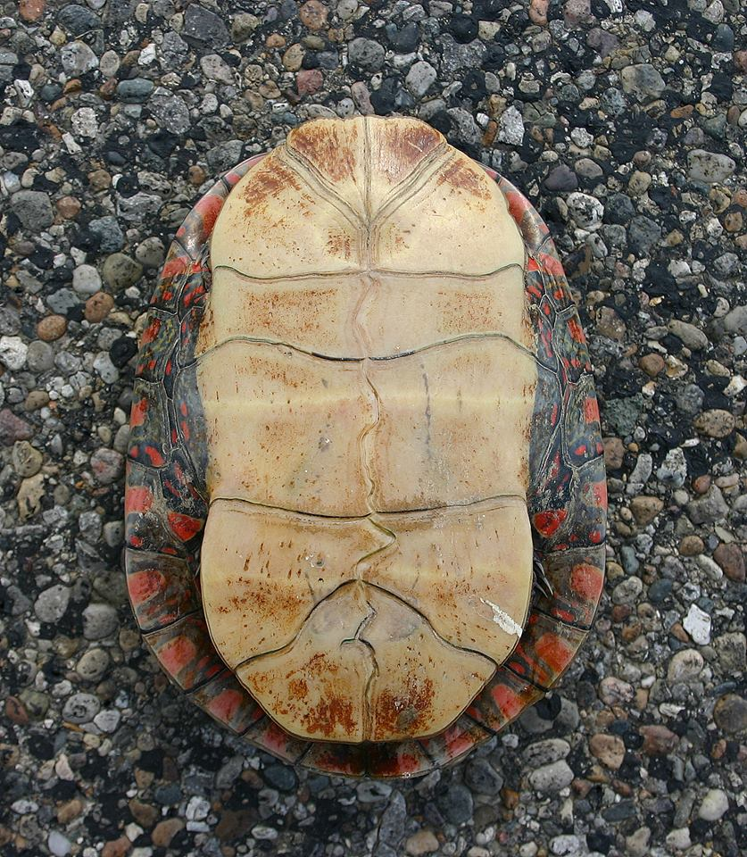

DC Fedora User Group
University of Maryland Libraries
May 15, 2018
Welcome and Introductions
Introducing Plastron:
A Python Client for the Fedora API
Joshua Westgard
May 15, 2018
I. What is Plastron?
- Plastron is a Python-based client for interacting with the Fedora API
- Originated in one-off batch loader for testing fcrepo
- Ideas developed further in import/export sprints
- Became formalized in Diamonback Newspaper Digitization
II. Why is it called Plastron?

- Plastron is the underside of a turtle's shell
- References the Diamondback Terrapin, the UMD mascot
- Image credit: User Ptarp, available at https://en.wikipedia.org/ wiki/Turtle_shell#/media/ File:Painted_Turtle%27s_Plastron_ %22belly_shell%22.jpg
II. Why is it called Plastron?

- Name also relates to Archelon
- Archelon is a prehistoric giant turtle and the namesake of our repository management application
- Image credit: Public domain image from Frederic A. Lucas, "Animals of the past," available at http://www.copyrightexpired.com/ earlyimage/bones/ large_animalspast_archelon.jpg
III. Features (A)
- LDP, PCDM, and Fcrepo classes being abstracted out into their own packages
- Goal is for Plastron to become one script that relies on these libraries
III. Features (B)
- Modular design
- Data handler interprets project data
- Currently have handlers for NDNP newspapers and a "Turtle" handler (RDF + binaries)
- CSV handler is planned
III. Features (C)
- Batch atomic operations
- Core concept: item vs. component resource
- Thanks to transactions, items can succeed or fail as a unit
III. Features (D)
- Batch and respository configuration files for ease of use
- Configurable logging
- Transactions and easy batch resumability
- Limit, percent, dry-run, ping
III. Features (E)
- Command-line tool with subcommand architecture
- --> plastron {load, delete, etc.}
- Can walk PCDM relations and perform CRUD operations
- Goal is to enable easy, efficient, & reliable interactions with repository resources
IV. Future Plans
- Release underlying classes as their own module
- These classes could be used to create other loaders, but also testing and repository crawling applications
- Hoping for community use and possible adoption as common python+fcrepo toolkit
Thank you!
Joshua Westgard (westgard@umd.edu)
/